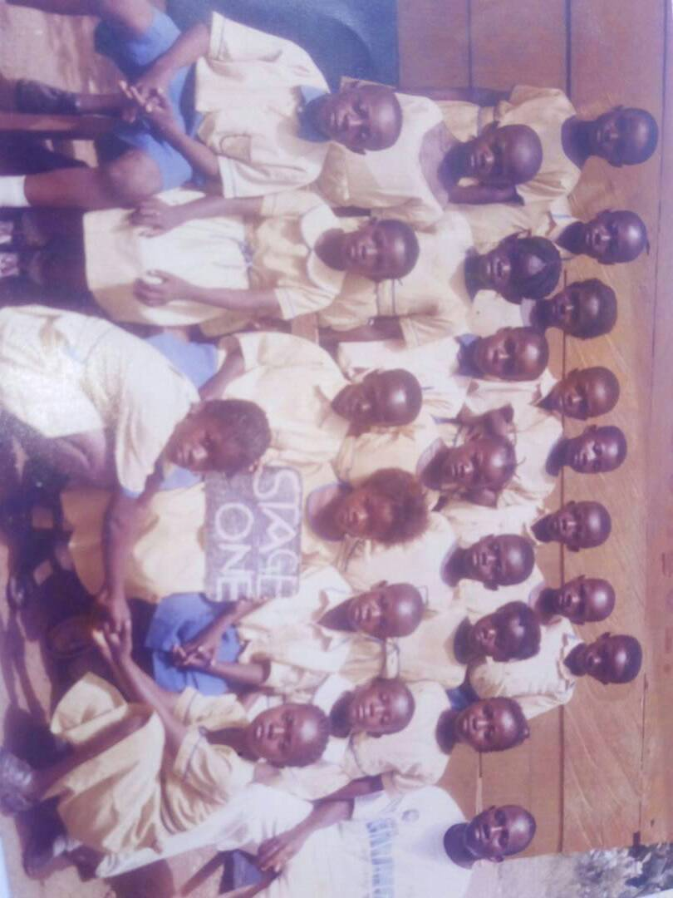
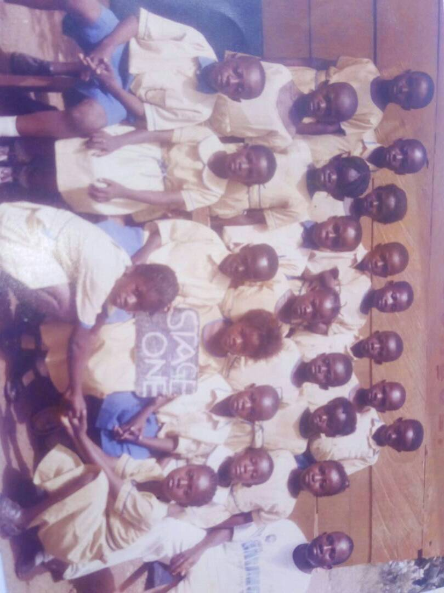
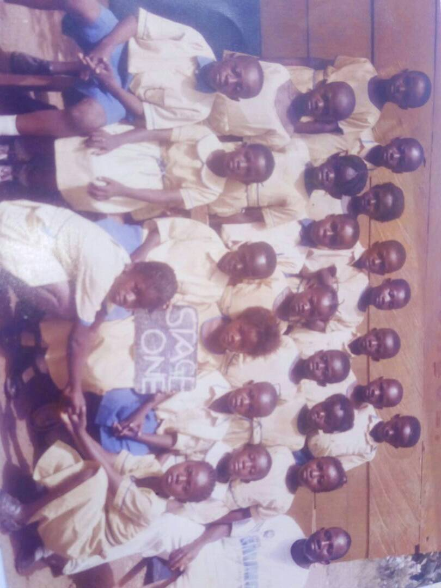

Ampeah Memorial School popuarly knoown as AMS was established in the year 1996 by Mrs Rose Ampeah with the help of her husband Mr Emmanuel Kye.madam Rose a striking ambition to train student who will be built up holisticlly in all facet of life to help our mother Ghana.The school was initially called new light but after the death of Madam Rose, it was renamed after her. Mr kye who was a pastor took over as the proprietor with one of the daugther mrs Rachael kye as the headmaster.

The school statrted with twelve student in class two through to jhs three.Their performance was awesome that ,the school was made known to alot of people.The second batch also did very well which maintain the integrity of the school.The performance of the school portrayed the motto ofthe school which is OUR STRENGTH IS IN THE LORD